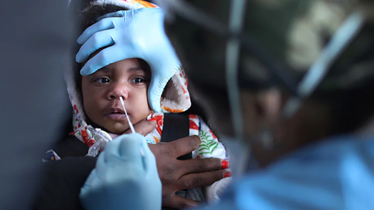
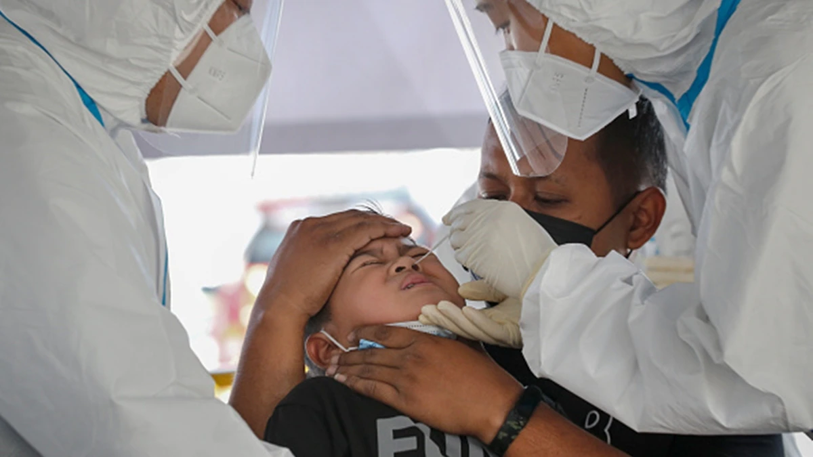
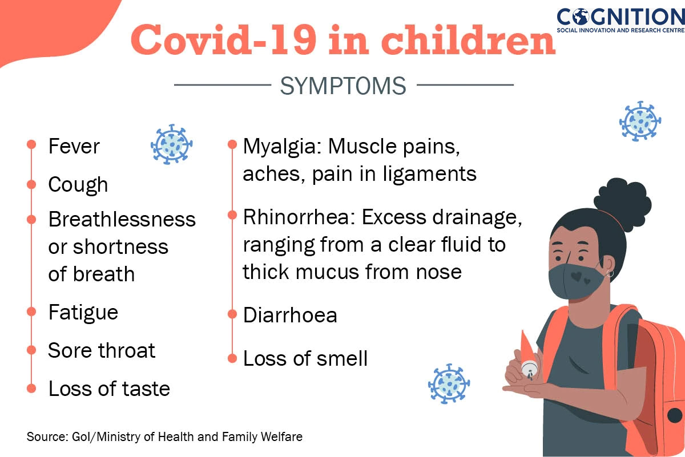

The Ministry of Health and Family Welfare has listed several ways and guidelines to identify if children have Covid-19 symptoms and how to manage the condition.
As adults and the elderly rush to vaccination centres to get the critically needed dosage of the Covid-19 vaccine, a group that is yet to be fully looked after are children. With the second wave of Covid-19 battering states after states, the next focus of concern are children who are likely to be most vulnerable if the third wave of the virus strikes. The Ministry of Health and Family Welfare has listed several ways and guidelines to identify if children have Covid-19 symptoms and how to manage the condition. The Health Ministry in a tweet said that "majority children with Covid-19 infection may be asymptomatic or mildly symptomatic in nature.Being asymptomatic refers to the fact that a person has Covid-19 but is not showing any symptoms of the disease. This can last for around 14 days which makes it more severe as the asymptomatic person ends up transmitting the virus to a lot of people, fuelling the pandemic. Similarly, pre-symptomatic people experience cough, fever, or breathing difficulty while not showing any symptoms in the beginning despite testing positive for the virus.
 Amid a vaccine crunch in India, the clinical trial nod to Bharat Biotech's Covaxin to inoculate children in the age group of 2-12 years is being welcomed. (Photo: Getty)The Health Ministry said that the common symptoms among children might include fever, cough, breathlessness or shortness of breath, fatigue, sore throat, myalgia (muscle pains, aches, pain in ligaments), rhinorrhea (excess drainage, ranging from a clear fluid to thick mucus from the nose), diarrhoea, loss of smell, loss of taste. Meanwhile, few children might also show symptoms of gastrointestinal issues.
The ministry also noted that a new syndrome known as system inflammatory syndrome has also been seen in children, such cases are characterised by unremitting fever.

Children who are asymptomatic Covid-19 positive can be managed at home. The ministry said that such children are identified during screening if family members are identified as Covid positive. They require monitoring for the development of symptoms and subsequent treatment. Meanwhile, children with mid diseases may have a sore throat, cough, or little breathing issues that do not require any investigation. The Health Ministry recommends that such children should be managed at home with home isolation and symptomatic treatment.
The ministry in a tweet also recommended keeping children with comorbidities underlying heart conditions, chronic lung disease, chronic organ dysfunction at home and getting them treatment at home.
.jpg)
Amid a vaccine crunch in India, the clinical trial nod to Bharat Biotech's Covaxin to inoculate children in the age group of 2-12 years is being welcomed across the country. Experts believe that a paediatric range of the vaccine will soon be available in the market. The Bharat Biotech clinical trial will involve 525 healthy volunteers below 18 years of age.
Apart from Covaxin, Zydus Cadila’s ZyCoV-D has been tested on children above 12 years in the US where the government has already authorized the use of Pfizer’s vaccine on kids.